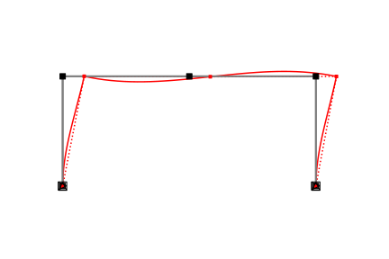
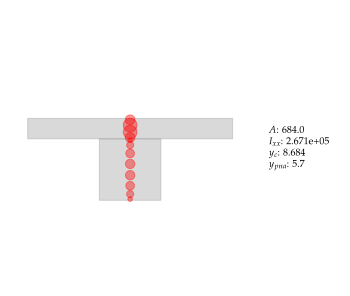

Title
Part I: Concept
Survey
- Operating Familiarity (command-line, scripting, programming)
- Linux
- Win
- MacOS
- Favorite data serialization? (e.g.
.mat,.json, etc) - Preferred scripting environment
- Preferred computing environment
Neural Networks
Operations
An Example 
 
Current tools available
- OpenSees: build a map Φ : P → U
New Questions
- What does X - space look like?
Requirements for Composition
Define an operation as a primitive that is closed under
- Linear Algebra
- Differentiation
Stage computations
Part II: Anabel
Purpose
- Explore/demonstrate the utility of a neural-like framework for structural modeling
Core Data Types
anabel.Operationanabel.Assembleranabel.Template
anabel.Operation
Requires:
shapeparameters(ElemDataschema)origin(ElemState)
Optional:
tangents
Core API
bind: Create an operation by binding a function to the input of an operation
Part III: Reliability Revisited
Frame Template
@anabel.template(3)
def beam2d_template(
q0: array = None,
E: float = None,
A: float = None,
I: float = None,
L: float = None
):
def beam(v, q, state=None, E=E,A=A,I=I,L=L):
C0 = E*I/L
C1 = 4.0*C0
C2 = 2.0*C0
k = anp.array([[E*A/L,0.0,0.0],[0.0,C1,C2],[0.0,C2,C1]])
return v, k@v, state
return locals()Parameterization
A = bftf + bwtw
Structural Composition
import anabel
model = anabel.SkeletalModel(ndm=2, ndf=3)
bw, tw = 18, 18
tf, bf = model.param("tf","bf")
# define an expression for the area
area = lambda tf, bf: bf*tf + bw*tw
# create a model parameter from this expression
A = model.expr(area, tf, bf)
...
# instantiate a `beam` in terms of this expression
girder = beam_template(A=A, I=I, E=3600.0)